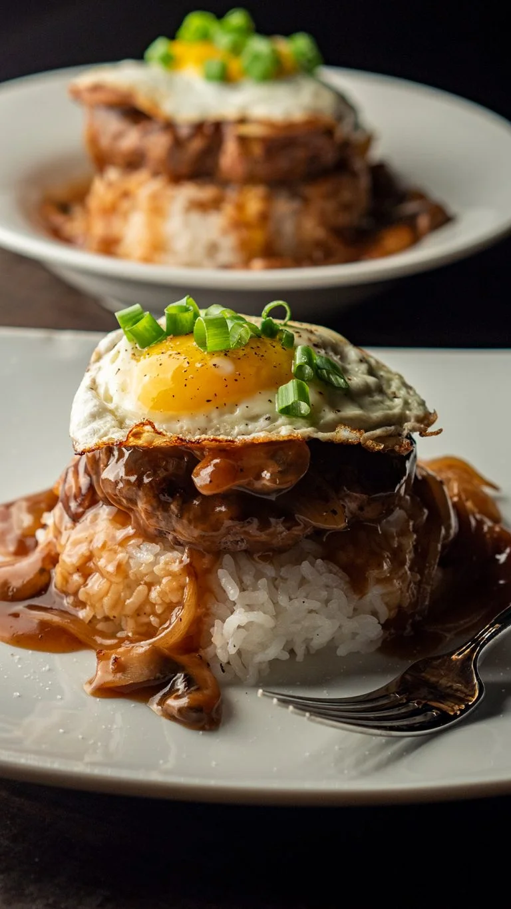

Loco Moco

A classic dish that is native to Hawaii. It consists of 3 layers: rice, hamburger patty, gravy, and egg which allows for a savory taste.
Ingredients
- ground beef
- eggs
- unsalted butter
- sweet onion
- green onion
- rice
- worcestershire sauce
- shoyu sauce
- ketchup
- garlic powder
- salt/pepper
- cornstarch
Steps
- Hamburger Patties
- Mix together ground beef with Worcestershire sauce, salt, pepper, and garlic powder in a large bowl.
- Start forming it into patties and rolling into a ball. Press down to about 1 inch thick.
- Head pan over medium heat and fry each side of the patties for about 3-5 minutes or until medium rare.
- Set patty aside to allow it to finish cooking.
- Gravy
- Mix together the beef stock, shoyu, Worcestershire sauce, ketchup, and cornstarch. Whish until cornstarch comes off of the bottom.
- Using the same pan, melt 1 tbsp of butter to caramelize the onions for about a minute.
- Melt the rest of the butter and add in the gravy mix to the pan. Keep stirring the gravy until it begins to thicken and simmer.
- Egg
- Melt a slice of butter and crack an egg onto the frying pan.
- Cook a sunny side up egg.
- Assemble Loco Moco
- Scoop hot white rice onto a plate. Layer it with a hamburger patty then drizzle the gravy. Top with egg and garnish with green onions.
- Enjoy!